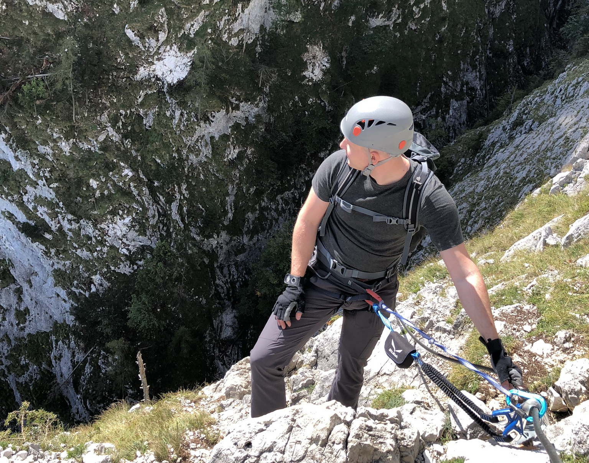

O mně
Ahoj!
Jsem Lukáš Richter, pocházím z Ostravy a věnuji se programování
Technologický stack
Jsem především backend Python programátor, ale příležitostně se nevyhýbám ani lehkému frontendu.
Hlavní
Operační systémy
- Linux
Jazyky
- Python
- Bash
- SQL
Databáze
- MySQL
- SQLite
- Redis
Webové servery
- Nginx
Devops
- Docker
- Kubernetes
Sekundární
Operační systémy
- Windows
- macOS
Jazyky
- JavaScript
- HTML
- CSS
Databáze
- MongoDB
Monitoring
- Grafana
- Kibana
- Prometheus
Další
Kromě uvedených technologií se jako programátor setkávám s různými knihovnami, používám frameworky (jako Flask a Django) a také pracuji s různými datovými formáty (XML, YAML, JSON, CSV), nebo formátovacími jazyky (Markdown, RST).
Případně se také učím za pochodu s tím, co si zrovna projekt vyžaduje.
Praxe
Profesionálně programuji již více než 7 let a za tu dobu jsem měl možnost pracovat v několika firmách.
Junior programátor (2015-2016)
Vývoj webových stránek včetně jejich návrhu, stahování a zpracování velkého množství dat.
Práce na projektu voleb.

Junior-senior programátor (2018-2021)
Především vývoj, vylepšování, ale i údržba velkých API s tisícovkami requestů za vteřinu.
Práce na projektech novinky.cz a Seznam Diskuze.
Na volné noze
Teď se soustředím na zakázkovou práci především pro regionální zákazníky.
Studium
Kolem počítáčů se pohybuji již od základní školy, kde jsem také chodil do třídy s rozšířenou výukou informatiky. Zprvu mě nejvíce zajímala grafika (rastrová, vektorová i 3D modeling), později na střední škole jsem se začal více věnovat CADu. Programování jsem se naplno začal věnovat na vysoké škole, kde mě nejvíce obohatilo studium na Karlově univerzitě.
České vysoké učení technické v Praze
Otevřená informatika (2011-2013)
Python, Java, C, VHDL, SQL, Matlab
Univerzita Karlova, Matematicko-fyzikální fakulta
Informatika a počítačové vědy (2010-2011)
Pascal, C#, algoritmy, datové struktury
Střední průmyslová škola, Ostrava-Vítkovice
Technické lyceum (2006-2010)
Java, AutoCAD, Inventor
Základní škola Ivana Sekaniny, Ostrava-Poruba
Rozšířená výuka Informatiky (1997-2006)
MS Office, základy webu
Hobby
Ve volném čase se ze všeho nejvíc věnuji lezení, ferratám, jízdě na kole, plavání a turistice.
Velmi mám rád přírodu, čas strávený s rodinou, přáteli, ale i v klidu o samotě.